Como ler este atlas. A Bacia do Araripe atravessa Ceará, Pernambuco e Piauí. Nem todo fóssil da bacia tem origem cearense comprovada. Neste atlas, registro fóssil, hipótese e paleoarte recebem descrições próprias.
🧭 Sobral: outras janelas para a pré-história
O Ceará reúne histórias separadas por centenas de milhões de anos. No Cariri, destacam-se os dinossauros do Cretáceo. Em Sobral e no noroeste cearense, o patrimônio documentado inclui mamíferos gigantes e vestígios de antigos ambientes marinhos.
🔎 O que a evidência permite afirmar
As fontes locais consultadas não sustentam atribuir uma espécie de dinossauro a Sobral. Isso não prova que dinossauros jamais passaram pela região: significa que precisamos de um registro científico para nomeá-los como animais locais.
Também é preciso distinguir onde um fóssil foi encontrado de onde está guardado. Uma peça do Araripe exposta em Sobral continua sendo um registro de sua localidade de origem.
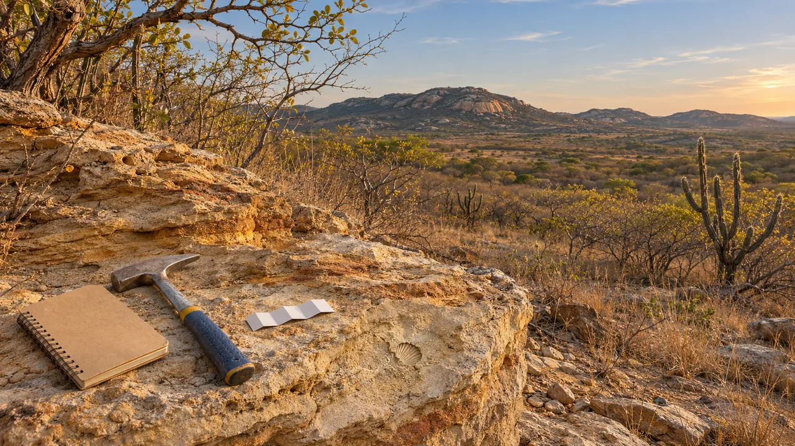
Ilustração artística gerada por IA, inspirada no patrimônio regional. Não é fotografia de um sítio, de um museu ou de uma escavação real.
🐾 Quatro mamíferos registrados em Sobral
O Atlas de Paleontologia da UVA, de 2018, relaciona estes animais ao Pleistoceno tardio de Sobral. Os restos ocorrem em depósitos de tanque: depressões naturais nas rochas que acumularam sedimentos e ossos. Uma associação fossilífera pode reunir materiais de momentos diferentes.
Eremotherium sp.
Grupo: preguiças terrestres gigantes.
Era um grande herbívoro de corpo robusto e membros com garras. A forma de vida terrestre contrasta com a imagem das pequenas preguiças que hoje vivem nas árvores.
Precisão local: o atlas registra o gênero. A abreviatura “sp.” indica que essa referência não determina uma espécie. Não substituir automaticamente por E. laurillardi.
Notiomastodon platensis
Grupo: proboscídeos, parentes dos elefantes.
Possuía tromba e grandes presas. Esse mamífero herbívoro pertence à história sul-americana dos gonfotérios; seu nome não o transforma em um mamute.
Como investigar: dentes, desgaste dentário e análises químicas ajudam a estudar a alimentação. Resultados obtidos em outras localidades não determinam, sozinhos, o cardápio dos indivíduos de Sobral.
Smilodon populator
Grupo: felinos de dentes de sabre.
Era um carnívoro de corpo forte, conhecido pelos caninos superiores muito alongados. Embora popularmente chamado de “tigre-dentes-de-sabre”, não era um tigre moderno.
Limite da reconstrução: o registro do animal não revela uma cena de caça específica. A posição dos indivíduos e qualquer interação mostrada na arte são escolhas ilustrativas.
Toxodon platensis
Grupo: notoungulados sul-americanos.
Era um grande mamífero herbívoro de corpo pesado. A aparência pode lembrar animais atuais, mas sua classificação pertence a uma linhagem extinta característica da América do Sul.
Aprendizado: semelhança externa não basta para estabelecer parentesco. Também não permite concluir que o animal tivesse exatamente os hábitos de um hipopótamo ou de um rinoceronte.
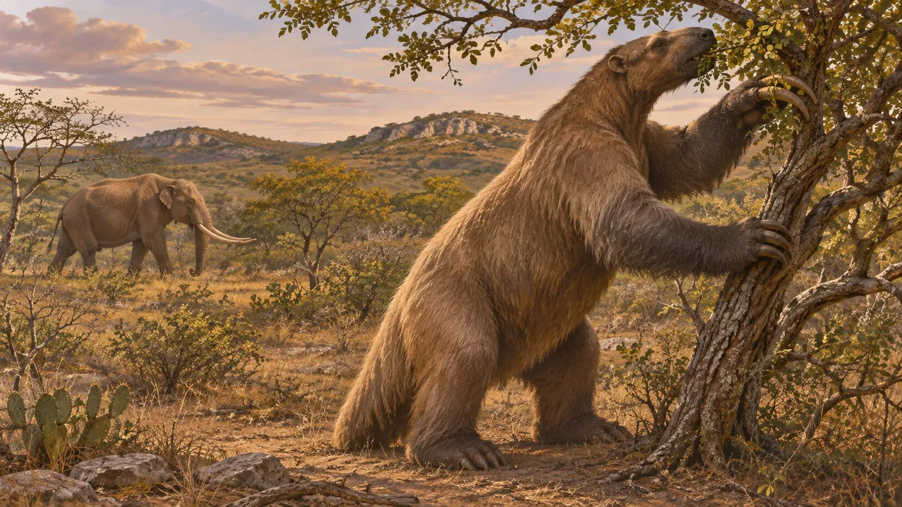
Paleoarte gerada por IA: reunião ilustrativa de animais registrados em Sobral. Cores, pelagem, vegetação e convivência na mesma cena são conjecturais; não representa uma localidade exata.
Pesquisas com isótopos de carbono mostram que a alimentação de grandes herbívoros como Eremotherium laurillardi, Notiomastodon platensis e Toxodon platensis variava entre ambientes. Isso ajuda a evitar reconstruções rígidas de uma única dieta ou paisagem para todo o Nordeste. Estudo de paleoecologia, 2013 ↗
🌊 Formação Ipu: um passado anterior aos dinossauros
Em Santana do Acaraú, Pacujá, Cariré e Ipu, um inventário publicado em 2024 documentou nove sítios paleontológicos silurianos da Formação Ipu. Entre os registros há moldes de anêmonas e icnofósseis: sinais de atividade, como galerias e pistas de invertebrados.
Esses vestígios não são pegadas de dinossauros. Um nome como Planolites classifica um tipo de traço, não identifica necessariamente a espécie do animal que o produziu. A investigação combina a forma do vestígio, a rocha e o ambiente de deposição.
Em 2025, pesquisadores descreveram a anêmona Arenactinia ipuensis, do Siluriano inicial da Formação Ipu. Sua preservação em arenitos grossos mostra como organismos de corpo mole também podem entrar no registro fóssil.
Cuidado com fontes antigas: interpretações publicadas para parte das ocorrências de Pacujá incluíram atribuições a Ediacara e à Bacia do Jaibaras. A região exige atenção à revisão estratigráfica: proximidade geográfica não torna todas as rochas da mesma idade. Aqui priorizamos o inventário de 2024 e a descrição de 2025.
Três histórias que não devem ser misturadas
Recorte
Tempo aproximado
O que observar
Formação Ipu, noroeste
Siluriano, há mais de 400 milhões de anos
Anêmonas e vestígios de invertebrados; anterior aos dinossauros.
Araripe, Cariri
Cretáceo, há mais de 100 milhões de anos
Dinossauros, aves, pterossauros e outros grupos.
Sobral, depósitos de tanque
Pleistoceno tardio, dezenas de milhares de anos
Megafauna de mamíferos; posterior aos dinossauros não avianos.
🏛️ Instituições e fontes para continuar
O Museu Dom José e o Laboratório de Paleontologia da UVA são referências na documentação do patrimônio regional. O artigo de 2005 sobre o museu descreve sua contribuição científica; seus números de acervo são históricos. Consulte os canais institucionais para condições atuais de visitação.
Explore preservando: observe, fotografe e procure orientação científica. Retirar um fóssil de seu contexto pode apagar informações sobre sua origem e história. O valor da descoberta inclui a rocha, a posição e os registros de campo.
🗺️ A Chapada do Araripe
Os dinossauros do Ceará vêm quase todos do Cariri, no sul do estado. Naquele tempo não havia planalto: havia lagos e, depois, uma laguna salgada.
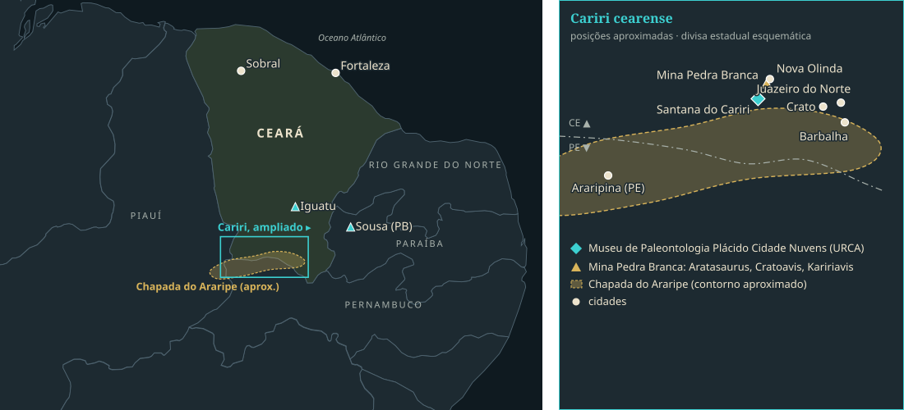
Posições aproximadas; contorno da Chapada esquemático. Base dos estados: @svg-maps/brazil (CC BY 4.0).
🗺️ Onde fica
A Bacia do Araripe ocupa a divisa entre Ceará, Pernambuco e Piauí. É estreita: cerca de 160 km de leste a oeste e 30 a 50 km de norte a sul.
🪨 As camadas
O Grupo Santana tem, da base para o topo, as formações Barbalha, Crato, Ipubi e Romualdo. Quase todos os dinossauros vêm do Romualdo; as aves e o “Ubirajara”, do Crato.
🫧 Dois tipos de tesouro
No Crato, o calcário em lâminas finas guarda penas, insetos e esqueletos achatados. No Romualdo, nódulos de calcário guardam peixes e ossos em três dimensões.
🌊 Água salgada
Na época do Romualdo, a bacia recebia água salgada. Por isso, um pterossauro de lagos e rios achado ali ajuda a contar uma história de predação.
🔬 Por que é famosa
A Formação Romualdo é uma Konservat-Lagerstätte, um depósito de preservação excepcional, conhecido no mundo todo. Os pterossauros são os tetrápodes mais comuns; dinossauros são raros.
🏛️ Desde quando
As primeiras pesquisas na região datam de 1840. Em 2006, o Geopark Araripe virou o primeiro geoparque da UNESCO nas Américas, com 3.796 km² em seis municípios.
🪨 A pilha de camadas
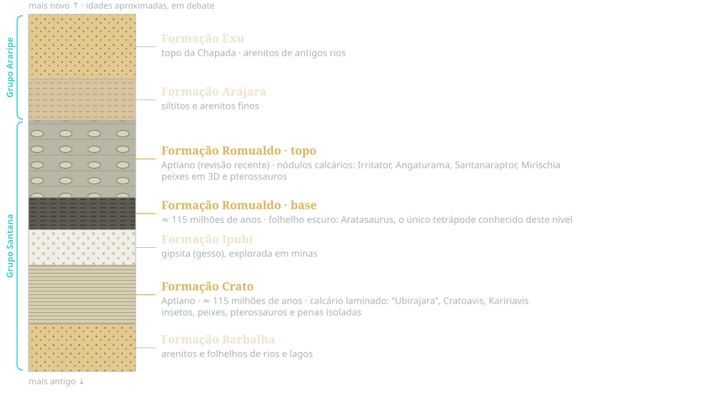
Coluna simplificada; as camadas em ouro entregaram dinossauros.
📏 Quem é quem
Todos os dinossauros não avianos do Araripe são terópodes: bípedes, a maioria carnívora, da linhagem que deu origem às aves.
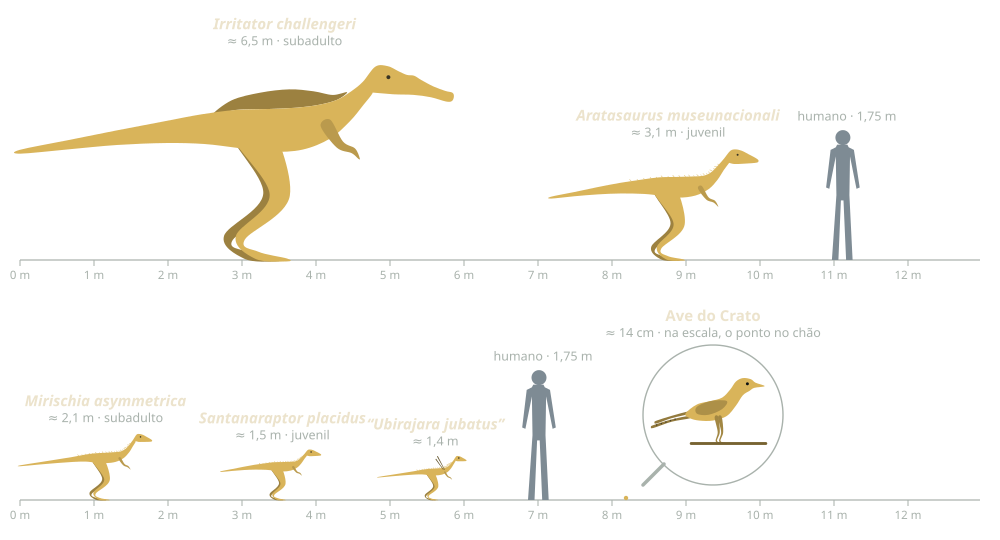
Silhuetas originais em escala. Tamanhos são estimativas publicadas; o Angaturama não aparece porque só o focinho é conhecido.
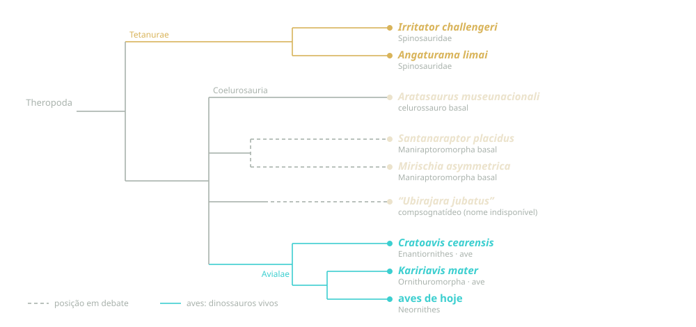
Árvore simplificada; linhas tracejadas indicam posição em debate.
🔤 Glossário rápido
Holótipo
o exemplar de referência oficial que dá nome a uma espécie.
Terópode
dinossauro bípede, quase sempre carnívoro; as aves são terópodes.
Espinossaurídeo
terópode de focinho longo, parecido com o de crocodilo, ligado à pesca.
Celurossauro
ramo de terópodes que reúne tiranossauros, compsognatídeos, raptores e aves.
Konservat-Lagerstätte
depósito de preservação excepcional, às vezes com partes moles.
Nódulo
bola de calcário que endureceu em volta de um organismo e o guardou em 3D.
Tegumento
a cobertura do corpo: pele, escamas, filamentos ou penas.
Gondwana
o supercontinente do sul que reunia América do Sul, África, Índia, Antártida e Austrália.
Aptiano e Albiano
idades do Cretáceo Inferior, entre cerca de 121 e 100 milhões de anos atrás.
ZooBank
registro oficial on-line de nomes de animais; nome publicado só em meio eletrônico precisa dele (Código Internacional de Nomenclatura Zoológica, art. 8.5.3).
🦖 Os dossiês
Os filtros abaixo abrangem os dossiês do Araripe e as aves; as fichas do Nordeste estão na seção própria.
Dossiê 1 · Espinossaurídeo
🐊 Irritator challengeri
O crânio de espinossaurídeo mais completo do mundo saiu do Araripe
Ceará provável
Romualdo; a literatura aponta a região de Santana do Cariri, mas o ponto de coleta não é conhecido. A dieta piscívora é uma hipótese consistente; não há prova de alimentação exclusiva de peixes.
Nome
de “irritação” + Professor Challenger, de O Mundo Perdido (Conan Doyle)
Descrição
1996 · Martill, Cruickshank, Frey, Small e Clarke
Holótipo
SMNS 58022 · crânio quase completo de um subadulto
Onde está
Museu Estadual de História Natural de Stuttgart (Alemanha)
Camada
Formação Romualdo, nódulos superiores · Aptiano, conforme revisão recente
Tamanho
≈ 6,5 m (estimativa de 2023)
Dieta
peixes e presas pequenas, como os crocodilos de hoje
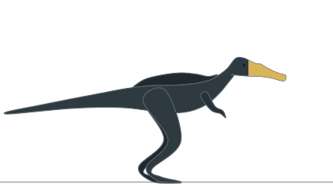
Em ouro, as partes preservadas, sobre uma silhueta genérica do grupo.
✨ Peculiaridades
🏆Continua sendo o crânio de espinossaurídeo mais bem preservado já encontrado. 🟢 Consenso
😤O focinho tinha sido alongado artificialmente antes de chegar aos cientistas. A “irritação” do nome é dos autores, não do animal. 🟢 Consenso
🌀Primeiro foi confundido com um pterossauro, depois com um maniraptor. Só em 1996 virou espinossaurídeo. 🟢 Consenso
🧠O estudo de 2023 propõe uma postura cefálica e uma mecânica de alimentação a partir da reconstrução tomográfica. Postura e função são inferências biomecânicas. 🟡 Hipótese do estudo
🦤Ao abrir a boca, as mandíbulas se afastavam para os lados e alargavam a garganta. A comparação com um pelicano gerou polêmica. 🟡 Em debate
👑Com ≈ 6,5 m, seria o maior animal do seu ecossistema, segundo os autores do estudo de 2023. 🟡 Em debate
🤓 Curiosidade nerd
Conan Doyle pôs dinossauros vivos num planalto isolado da América do Sul em O Mundo Perdido (1912). Oitenta e quatro anos depois, um planalto sul-americano entregou o crânio que homenageia o Professor Challenger.
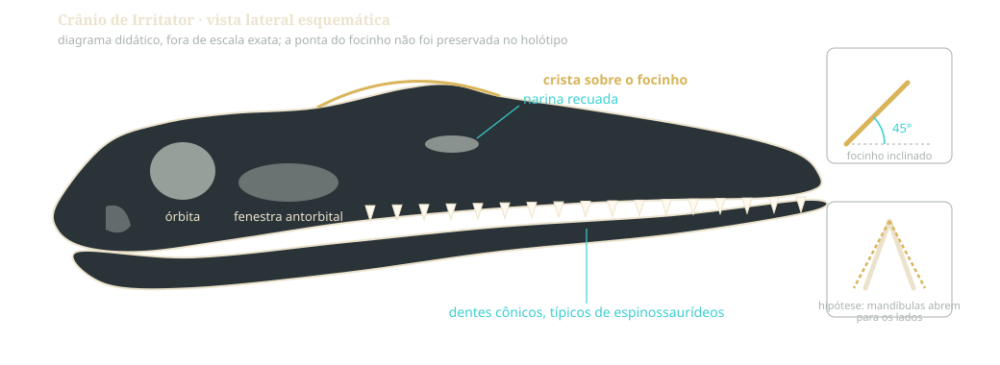
Diagrama didático do crânio e os achados da tomografia de 2023.
🔬 Paleorradiologia: o Irritator no tomógrafo🟢 Consenso
O crânio foi reconstruído em 2023 a partir de tomografia computadorizada médica e de microtomografia (µCT), sem precisar ser quebrado. Em 2020, a tomografia da caixa craniana já tinha revelado o molde do encéfalo, com possíveis adaptações para pescar. É o mesmo princípio do tomógrafo do hospital: cortes finos reconstruídos em três dimensões.
Dossiê 2 · Espinossaurídeo
🌸 Angaturama limai
Um focinho em forma de roseta, e a dúvida se é o mesmo bicho do Irritator
Araripe · coleta incerta
Conhecido pela ponta do focinho. A procedência exata é incerta e sua possível sinonímia com Irritator continua em discussão; não contar automaticamente como diversidade independente comprovada.
Nome
espírito protetor da tradição tupi, “o nobre, o valente” · limai homenageia o paleontólogo Murilo Rodolfo de Lima
Descrição
1996 · Kellner e Campos, cerca de um mês depois do Irritator
Holótipo
GP/2T-5 · parte da frente do crânio
Localidade
Bacia do Araripe · Formação Romualdo; ponto de coleta incerto
Tamanho
desconhecido: só o focinho foi achado
Parentes
Spinosaurus, Irritator, Oxalaia (Maranhão)
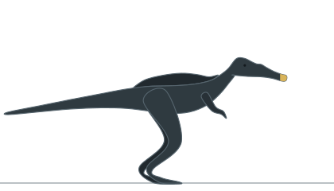
Em ouro, as partes preservadas, sobre uma silhueta genérica do grupo.
✨ Peculiaridades
🗡️O focinho é extremamente achatado dos lados e tem uma crista alta na pré-maxila. 🟢 Consenso
🌸A ponta se alarga em roseta, com dentes longos, como nos outros espinossaurídeos. 🟢 Consenso
🧩Muitos paleontólogos acham que é o mesmo animal do Irritator: um tem o focinho, o outro tem o crânio sem a ponta. Pesquisadores brasileiros defendem que são espécies distintas. 🟡 Em debate
🦴Uma réplica de esqueleto montada no Museu Nacional, com ossos de espinossaurídeos do Romualdo, mostra o animal carregando um pterossauro. 🟢 Consenso
🦷Uma vértebra de pescoço de pterossauro do Brasil tem um dente de espinossaurídeo cravado: prova de mordida, seja de caça ou de carniça. 🟢 Consenso
🤓 Curiosidade nerd
Murilo Rodolfo de Lima avisou Alexander Kellner sobre o fóssil em 1991. O nome do gênero vem de um espírito protetor tupi, e o da espécie, de quem cuidou para que o fóssil chegasse à ciência.
Dossiê 3 · Celurossauro
🧬 Santanaraptor placidus
Pele, músculo e talvez vasos sanguíneos de um dinossauro jovem
Ceará provável
A revisão de 2025/2026 aponta Santana do Cariri como origem provável. A afinidade com manirraptoromorfos basais é a hipótese preferida desse estudo, ainda sujeita a revisão.
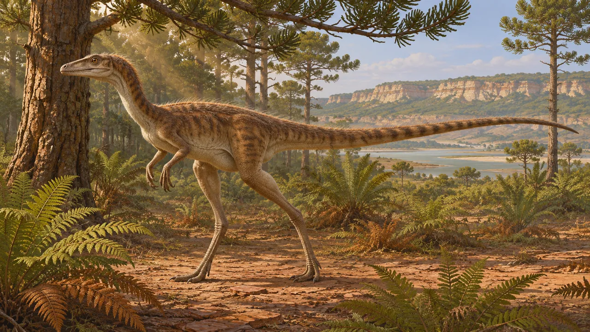
Paleoarte gerada por IA. Cores, tecidos e partes não preservadas são interpretações; esta imagem não substitui a descrição fóssil.
Nome
“ladrão da Formação Santana” · placidus homenageia Plácido Cidade Nuvens, fundador do museu de Santana do Cariri
Descrição
1999 · Alexander Kellner
Holótipo
MN 4802-V · juvenil: 3 vértebras da cauda, ísquios, fêmures, tíbia, fíbula, pé e tecido mole
Onde está
Museu Nacional/UFRJ; o estudo de 2025/2026 informa danos no incêndio de 2018 e utiliza observações diretas anteriores
Achado
1996, Formação Romualdo · algumas reportagens dizem 1991
Tamanho
≈ 1,5 m e 15 kg (estimativa; reportagens falam em até 2,5 m)
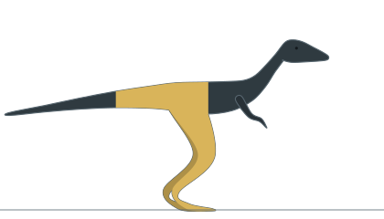
Em ouro, as partes preservadas, sobre uma silhueta genérica do grupo.
🦶Sob o pé esquerdo ficou a impressão da pele, com escamas. 🟢 Consenso
🌿Já foi visto como maniraptor e como o primeiro tiranossauroide do Gondwana. Em 2025, foi posto num ramo basal dos Maniraptoromorpha, junto com Mirischia. 🟡 Em debate
⚖️O estudo de 2025 confirmou que Santanaraptor e Mirischia são espécies diferentes, pelas formas do ísquio e da tíbia. 🟢 Consenso
🤓 Curiosidade nerd
Foi preciso esperar 26 anos, de 1999 a 2025, para que o Santanaraptor ganhasse uma descrição anatômica completa.
Dossiê 4 · Celurossauro
🫁 Mirischia asymmetrica
Um quadril “maravilhoso”, com intestino e talvez um saco aéreo
Pernambuco provável
Provavelmente Araripina, PE, segundo a revisão de 2025/2026. É um registro da Bacia do Araripe, sem descoberta cearense confirmada. A aparente assimetria pélvica foi reavaliada como possível efeito de quebra/incompletude.
Nome
mirus, “maravilhoso” + ischia, ossos do quadril; asymmetrica refere-se à interpretação original, reavaliada em 2025/2026
Descrição
2004 · Naish, Martill e Frey
Holótipo
SMNK 2349 PAL · subadulto: pelve, pernas incompletas, 2 vértebras, costela e gastrália
Onde está
Museu Estadual de História Natural de Karlsruhe (Alemanha)
Procedência
Chapada do Araripe · relatos apontam Araripina (PE)
Tamanho
≈ 2,1 m e ≈ 7 kg (estimativas de 2004 e 2010)
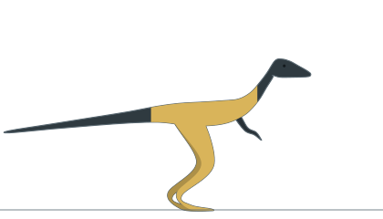
Em ouro, as partes preservadas, sobre uma silhueta genérica do grupo.
✨ Peculiaridades
🍝Na frente do púbis há um pedaço de intestino petrificado. 🟢 Consenso
🫁Um espaço vazio entre o púbis e o ísquio foi interpretado como saco aéreo, a mesma peça do sistema respiratório das aves. 🟡 Em debate
🔍A revisão de 2025/2026 relaciona a aparente assimetria a quebra e incompletude. Não é uma assimetria biológica demonstrada. 🟡 Interpretação revisada
🌿Classificação em disputa: compsognatídeo (2004), tiranossauroide basal (2010) e maniraptoromorfo basal (2025). 🟡 Em debate
🤓 Curiosidade nerd
Um dinossauro com nome de quadril: é raro um esqueleto tão incompleto receber um nome que elogia justamente o pedaço que sobrou.
Dossiê 5 · Celurossauro
🔥 Aratasaurus museunacionali
O “lagarto nascido do fogo”, que escapou do incêndio do Museu Nacional
Ceará documentado
Mina Pedra Branca, Santana do Cariri. Partes da perna e do pé direitos fundamentam a descrição; crânio, braços e cobertura corporal não foram preservados no exemplar.
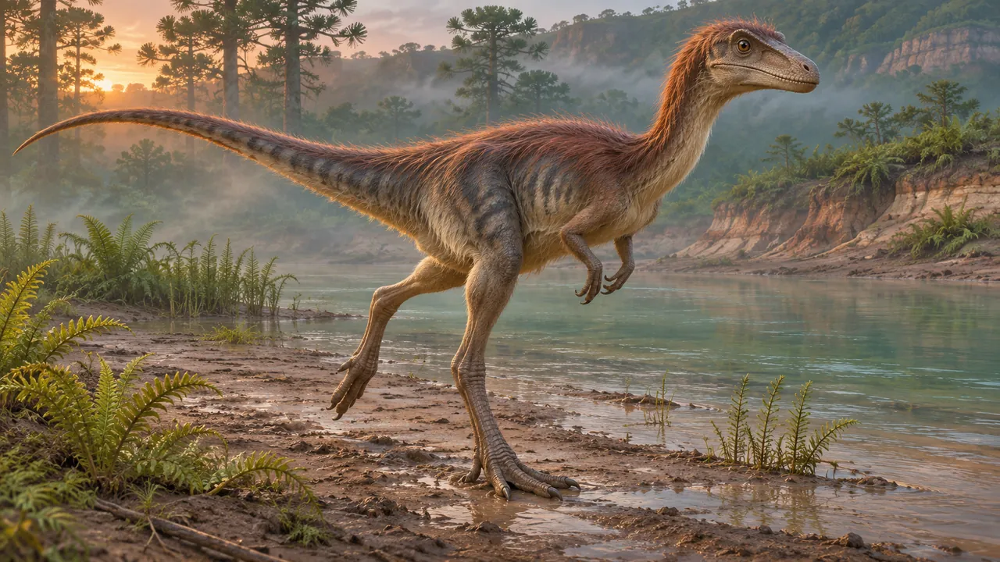
Paleoarte gerada por IA. Cores, tecidos e partes não preservadas são interpretações; esta imagem não substitui a descrição fóssil.
Nome
tupi ara (nascido) + atá (fogo) + saurus · homenagem ao Museu Nacional, a instituição científica mais antiga do Brasil
Descrição
2020 · Sayão e colegas (UFPE, URCA e Museu Nacional), Scientific Reports
Holótipo
MPSC R 2089 · perna direita: parte do fêmur, metade da tíbia e pé incompleto
Onde está
Museu de Paleontologia Plácido Cidade Nuvens, Santana do Cariri, desde dezembro de 2020
Achado
2008, Mina Pedra Branca, a 5,2 km de Santana do Cariri · doado por um morador
Tamanho
juvenil de ≈ 3,12 m e ≈ 34 kg
Parente
Zuolong salleei, da China
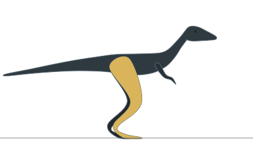
Em ouro, as partes preservadas, sobre uma silhueta genérica do grupo.
✨ Peculiaridades
🥇É o dinossauro mais antigo da Bacia do Araripe e o único tetrápode conhecido da base da Formação Romualdo. 🟢 Consenso
🌳Os ossos mostram 4 linhas de crescimento: era jovem e ainda cresceria. 🟢 Consenso
🔥Estava em estudo num anexo do Museu Nacional que escapou do incêndio de 2018. 🟢 Consenso
📝O nome só passou a valer depois de uma correção publicada em 2020 com o registro exigido pelo ZooBank. 🟢 Consenso
🪶Como celurossauro, provavelmente tinha algum tipo de penugem, mas nenhuma foi preservada. 🟠 Fronteira
🤓 Curiosidade nerd
Kellner resumiu: “podemos chamá-lo de dinossauro cearense, sim”. Mas lembrou que ele provavelmente vivia por várias áreas do Nordeste, e que os continentes ocupavam outras posições.
Dossiê 6 · Celurossauro
🪶 “Ubirajara jubatus”
O pequeno exibido que virou bandeira da repatriação de fósseis
Araripe · nome indisponível
O fóssil e sua história de repatriação são reais; o nome usado entre aspas não deve ser contado como espécie com nomenclatura estabelecida.
Nome
tupi “senhor da lança” + latim jubatus, “com crina” · nome indisponível pelas regras de nomenclatura
Descrição
dez/2020 na Cretaceous Research · artigo retirado em set/2021
Espécime
SMNK PAL 29241 · pescoço, costas, costelas, braço completo e tegumento
Onde está
Museu de Paleontologia Plácido Cidade Nuvens, desde junho de 2023
Camada
Formação Crato · Aptiano, ≈ 115 milhões de anos
Tamanho
como uma galinha grande: ≈ 1,4 m do focinho à cauda e ≈ 35 cm no ombro
Parente
próximo de Compsognathus, da Europa
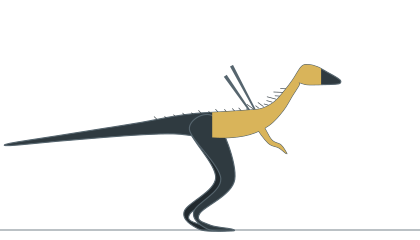
Em ouro, as partes preservadas, sobre uma silhueta genérica do grupo.
✨ Peculiaridades
🪶Tinha uma crina de filamentos ao longo das costas. 🟡 Em debate
🎀Nos ombros, duas hastes rígidas e alongadas, que não eram escamas, pelos nem penas modernas: estruturas únicas. 🟡 Em debate
💃Os autores sugerem exibição para parceiros e rivais, como num pássaro-do-paraíso. 🟠 Fronteira
🕯️O fóssil guarda caroços de “cera de sepultura”, formada a partir da gordura do corpo. 🟡 Em debate
🏷️Os registros do nome foram removidos do ZooBank em 18/11/2022. Por isso ele aparece sempre entre aspas. 🟢 Consenso
🤓 Curiosidade nerd
A campanha #UbirajaraBelongsToBR tomou as redes em dezembro de 2020. Depois do retorno, foi anunciada a devolução, pela França, de outros 45 fósseis do Ceará, e o Brasil passou a buscar patrimônio em 14 países.
🧭 Além do Ceará: os dinossauros do Nordeste
O Nordeste reúne herbívoros, predadores e rastros de deslocamento em diferentes bacias e épocas. Estas três fichas ampliam o atlas regional; seus registros são do Maranhão e da Paraíba. Revisão editorial: .
Maranhão · saurópode · fóssil corporal
🌿 Amazonsaurus maranhensis
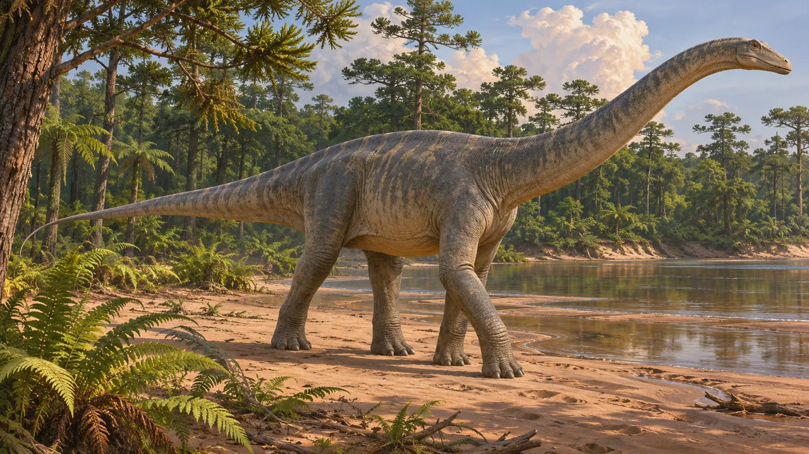
Paleoarte gerada por IA. Cores, cabeça, tecidos e partes não preservadas são reconstruções interpretativas.
Onde e quando: localidade Mata, município de Itapecuru-Mirim, Maranhão. Formação Itapecuru; Aptiano–Albiano do Cretáceo Inferior, conforme a descrição de 2003.
Como era: saurópode diplodocoide, quadrúpede, de pescoço e cauda longos. O esqueleto incompleto preserva características diagnósticas, sobretudo em vértebras. Não há crânio conhecido associado ao exemplar descrito.
Alimentação: herbivoria inferida por sua anatomia e parentesco com outros saurópodes. O fóssil não revela um cardápio exato nem demonstra quais plantas preferia.
Limite da imagem: a silhueta completa ajuda a imaginar o animal, mas não equivale a um esqueleto encontrado inteiro. Comprimento, postura do pescoço e aparência da pele exigem comparação e interpretação.
Onde e quando: Laje do Coringa, Ilha do Cajual, município de Alcântara. Formação Alcântara, Cenomaniano do Cretáceo Superior: um contexto mais recente que o dos dinossauros da Formação Romualdo.
O que foi encontrado: a descrição de 2011 se baseia na parte anterior do focinho e em um fragmento de maxila atribuído ao táxon. A ponta expandida do rostro e os dentes sem serrilhas são características relevantes.
Alimentação: era um predador. A participação de peixes na dieta é uma inferência apoiada na comparação com espinossaurídeos; os fragmentos não demonstram alimentação exclusivamente piscívora.
O que permanece aberto: suas relações e a possível sinonímia com Spinosaurus foram debatidas em estudos posteriores. O formato de uma grande vela dorsal, a cauda e as proporções do corpo não são documentados pelos fragmentos descritos.
Onde e quando: Serrote do Letreiro, município de Sousa. O estudo de 2024 atribui o sítio à Formação Antenor Navarro, Berriasiano–Hauteriviano do Cretáceo Inferior.
O vestígio: pegadas atribuídas a terópodes, saurópodes e ornitópodes registram a passagem dos animais. São icnofósseis — marcas de atividade —, não ossos. A forma da pegada não permite identificar automaticamente uma espécie ou seu alimento.
Duas histórias, épocas diferentes: gravuras indígenas foram produzidas junto às pegadas já fossilizadas. A proximidade documenta a relação de populações humanas com vestígios antigos; não demonstra convivência com dinossauros não avianos.
Esta ficha não usa uma fotografia fictícia do sítio. Uma reconstrução artística de trilhas deve ser identificada como ilustração e não substituir o registro documental.
Atualizado em . O fóssil cearense também permite investigar como vestígios biológicos podem se preservar.
Um estudo publicado online em combinou análises químicas e microscópicas de ossos de Aratasaurus museunacionali. Encontrou microestruturas elipsoidais mineralizadas em canais vasculares e sinais de heme, interpretados pelos autores como evidências de hemácias fossilizadas.
Como interpretar: são estruturas mineralizadas e vestígios moleculares, não sangue fresco ou células vivas. O estudo não demonstra recuperação de DNA de dinossauro. A origem e a preservação de biomoléculas antigas exigem controle de contaminação e múltiplas técnicas.
As aves são dinossauros. A Formação Crato guarda algumas das aves mais antigas do hemisfério sul, com penas preservadas.
Ave · Enantiornithes
🐦 Cratoavis cearensis
O primeiro esqueleto articulado de ave do Cretáceo Inferior da América do Sul
Nome
ave do Crato, do Ceará
Descrição
2015 · Carvalho e colegas, Brazilian Journal of Geology
Holótipo
esqueleto articulado com penas nas asas e em volta do corpo
Achado
Mina Pedra Branca, Nova Olinda · Formação Crato
Grupo
Enantiornithes, as “aves opostas”, extintas no fim do Cretáceo
✨ Peculiaridades
🥇Foi o primeiro esqueleto quase completo e articulado de ave do Cretáceo Inferior documentado na América do Sul. 🟢 Consenso
🐟Restos de peixes Dastilbe junto ao corpo podem ser o conteúdo do estômago: indício de dieta de peixes. 🟡 Em debate
🤓 Curiosidade nerd
No mesmo ano, a equipe publicou na Nature Communications uma ave do Crato do tamanho de um beija-flor, com 6 cm de corpo e penas de cauda em fita ainda mais longas. Uma fileira de pintas pode ser resto da cor original.
Ave · Ornithuromorpha
🦶 Kaririavis mater
O pé mais antigo da linhagem das aves modernas no Gondwana
Nome
ave dos Kariri + mater, “mãe” em latim
Descrição
2021 · Carvalho, Agnolin, Rozadilla, Novas, Andrade e Xavier-Neto
Holótipo
um pé direito isolado, com algumas penas
Achado
Mina Pedra Branca, Nova Olinda · Formação Crato, ≈ 115 milhões de anos
Grupo
Ornithuromorpha, a linhagem que inclui todas as aves de hoje
✨ Peculiaridades
🥇É o Ornithuromorpha mais antigo conhecido do Gondwana. 🟢 Consenso
🦅As garras misturam traços de aves que caçam e de aves que se empoleiram. 🟡 Em debate
🎣O ambiente era de lagos rasos; viver perto da água e comer peixe é uma hipótese dos autores. 🟠 Fronteira
🤓 Curiosidade nerd
As aves são dinossauros. Então, a rigor, Cratoavis e Kaririavis entram na lista dos dinossauros do Ceará, e o mais recente deles pode estar no seu quintal agora.
🔎 Outros vestígios no Ceará
👣 Pegadas no Ceará
As bacias do Iguatu, no centro do estado, têm registros de pegadas de dinossauros, inclusive possíveis pegadas de pequenos terópodes. As mais famosas do Nordeste ficam em Sousa, na Paraíba.
🟢 Consenso
🪶 Penas soltas
A Formação Crato também guarda penas isoladas, estudadas como fósseis por conta própria.
🟢 Consenso
🤮 O vômito fossilizado (2025)
Um fóssil guardado por décadas no Museu Câmara Cascudo, em Natal, como “peixe indeterminado”, é um regurgito com dois pterossauros filtradores, Bakiribu waridza, “boca de pente” em kariri. O predador provável é um espinossaurídeo como o Irritator.
🟡 Em debate
🦷 Mordida registrada
A vértebra de pterossauro com dente de espinossaurídeo cravado mostra que esses dinossauros mordiam pterossauros, vivos ou mortos.
🟢 Consenso
🏺 Em Sobral
O Museu Dom José, em Sobral, guarda na sua coleção um espécime fóssil da Bacia do Araripe, coletado em Simões (PI), estudado numa dissertação da UFC em 2018.
🟢 Consenso
🌊 O mundo deles
No Cretáceo Inferior, ambientes do Araripe incluíram lagos e incursões marinhas. Na Formação Romualdo, tratada como Aptiano pela revisão recente, há peixes, pterossauros e dinossauros. A tabela reúne relações propostas de diferentes formações; não representa uma única comunidade contemporânea.
Presa
Predador
Evidência
🦐 crustáceos e plâncton
➜
🦅 Bakiribu, pterossauro filtrador
🟢 Consenso
🐟 peixes como Dastilbe
➜
🐦 Cratoavis
🟡 Em debate
🐟 peixes grandes
➜
🐊 Irritator
🟢 Consenso
🦅 pterossauros
➜
🐊 espinossaurídeos
🟢 Consenso
🦎 pequenos vertebrados
➜
🦖 celurossauros pequenos
🟠 Fronteira
🤮 O vômito que virou prova. Em 2025, um fóssil guardado como “peixe indeterminado” revelou dois pterossauros filtradores dentro de um regurgito. Bakiribu vivia em lagos e rios, mas foi parar na laguna salgada: alguém o comeu e o devolveu, provavelmente um espinossaurídeo como o Irritator. 🟡 Em debate
⚖️ Fósseis exilados e repatriados
Dois dos dinossauros com nome do Araripe têm o holótipo, o exemplar de referência da espécie, na Alemanha. O “Ubirajara” também estava lá, e voltou.
Espécie
Holótipo
Onde está
Irritator challengeri
SMNS 58022
Stuttgart, Alemanha
🌍 no exterior
Mirischia asymmetrica
SMNK 2349 PAL
Karlsruhe, Alemanha
🌍 no exterior
Santanaraptor placidus
MN 4802-V
Museu Nacional/UFRJ, Rio de Janeiro
🇧🇷 no Brasil
Angaturama limai
GP/2T-5
coleção GP/2T · local não informado nas fontes consultadas
🇧🇷 no Brasil
Aratasaurus museunacionali
MPSC R 2089
Museu Plácido Cidade Nuvens, Santana do Cariri
🏠 no Ceará
“Ubirajara jubatus”
SMNK PAL 29241
Museu Plácido Cidade Nuvens, Santana do Cariri (repatriado em 2023)
🏠 no Ceará
🪶 A saga do “Ubirajara”
1995O fóssil sai do Brasil e vai para o Museu Estadual de História Natural de Karlsruhe, na Alemanha.
13/12/2020A descrição sai na Cretaceous Research. Começa a campanha #UbirajaraBelongsToBR.
set/2021A revista retira o artigo.
18/11/2022Os registros do nome são removidos do ZooBank.
04/06/2023O fóssil chega ao Brasil.
12/06/2023Cerimônia oficial de repatriação em Brasília.
2023Entregue ao Museu Plácido Cidade Nuvens, em Santana do Cariri. A França anuncia a devolução de 45 fósseis do Ceará.
2026O Brasil busca recuperar patrimônio que está em 14 países.
📜 Os depósitos fossilíferos são propriedade da Nação, e a extração de fósseis depende de autorização prévia e fiscalização do poder público. Hoje quem autoriza e fiscaliza é a Agência Nacional de Mineração (ANM).
Decreto-Lei nº 4.146, de 4 de março de 1942, art. 1º
🚫 Mitos e fatos
Toque em cada mito para ver o fato.
❌ Pterossauros são dinossauros.
✅ Não são. São répteis voadores aparentados, mas formam um grupo à parte. 🚫 Refutado
❌ Aves não são dinossauros.
✅ São. Cratoavis e Kaririavis são dinossauros do Ceará, e os pássaros de hoje também. 🚫 Refutado
❌ O Irritator era um bicho irritado.
✅ A irritação foi dos cientistas, ao perceber que o focinho tinha sido alongado artificialmente. 🚫 Refutado
❌ O Aratasaurus queimou no incêndio do Museu Nacional.
✅ Ele estava num anexo que escapou do fogo e voltou ao Ceará em 2020. 🚫 Refutado
❌ “Ubirajara jubatus” é o nome oficial.
✅ O artigo foi retirado e o nome está indisponível. Uma nova descrição pode dar outro nome. 🚫 Refutado
❌ Fóssil achado no terreno é de quem achou.
✅ Pela lei de 1942, depósitos fossilíferos são da Nação. Coletar exige autorização. 🚫 Refutado
❌ O Ceará teve T. rex.
✅ O T. rex viveu na América do Norte, uns 45 milhões de anos depois dos dinossauros do Araripe. 🚫 Refutado
🧭 Roteiro de visita
🏛️ Museu de Paleontologia Plácido Cidade Nuvens
Santana do Cariri · URCA. Instituição de referência para conhecer o patrimônio fossilífero do Araripe. Consulte os canais oficiais para confirmar acesso e programação.
🌋 Geopark Araripe · UNESCO
Nove geossítios em Barbalha, Crato, Juazeiro do Norte, Missão Velha, Nova Olinda e Santana do Cariri.
🦅 Geossítio Parque dos Pterossauros
Santana do Cariri · um dos geossítios paleontológicos do Geopark.
🪨 Geossítio Pedra Cariri
Nova Olinda · a lavra do calcário laminado, a pedra do Crato.
🌲 Geossítio Floresta Petrificada do Cariri
Troncos de árvores fossilizados.
🧭 Distância
O Cariri fica a cerca de 500 km de Fortaleza.
Horários e regras mudam: confirme com o museu e o Geopark antes de viajar.
⏳ Linha do tempo
≈ 115 MaLagos do Crato: Ubirajara, Cratoavis, Kaririavis. Base do Romualdo: Aratasaurus.
Os PDFs preservam a primeira edição e não incluem esta ampliação. Para Sobral, Nordeste e correções recentes, use esta página ou a impressão do navegador.
✒️ Fontes
Fatos conferidos em 23/11/2026. Tamanhos e idades são estimativas publicadas; quando as fontes divergem, o texto diz.
As silhuetas, os mapas, a coluna e o cladograma são diagramas originais. As cenas coloridas são paleoarte gerada por IA e não fotografias de fósseis ou sítios.